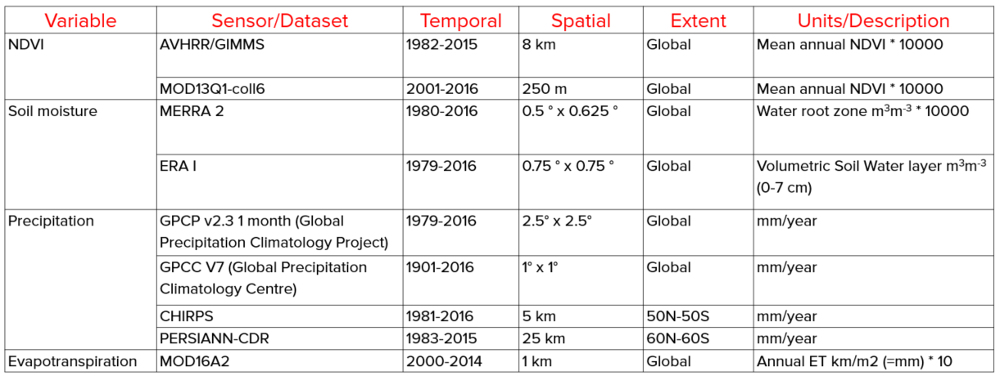

Indicateur ODD 15.3.1¶
Dans le cadre du «Programme de développement durable à l’horizon 2030», l’objectif de développement durable (ODD) 15 est de :
« Préserver et restaurer les écosystèmes terrestres, en veillant à les exploiter de façon durable, gérer durablement les forêts, lutter contre la désertification, enrayer et inverser le processus de dégradation des sols et mettre fin à l’appauvrissement de la biodiversité »
Chaque ODD a des cibles spécifiques qui traitent de différentes composantes, dans ce cas, de la vie sur terre. La cible 15.3 vise à :
« D’ici à 2030, lutter contre la désertification, restaurer les terres et sols dégradés, notamment les terres touchées par la désertification, la sécheresse et les inondations, et s’efforcer de parvenir à un monde sans dégradation des sols »
Des indicateurs seront ensuite utilisés pour évaluer les progrès de chaque cible des ODD. Dans le cas de l’ODD 15.3, les progrès vers un monde neutre en termes de dégradation des terres seront évalués à l’aide de l’indicateur 15.3.1 :
« Proportion de la surface émergée totale occupée par des terres dégradées »
En tant qu’agence dépositaire de l’ODD 15.3, la Convention des Nations Unies sur la lutte contre la désertification (CNULCD) a élaboré un Guide de bonnes pratiques. avec des recommandations sur la façon de calculer l’indicateur ODD 15.3.1.
This document provides a brief introduction to SDG Indicator 15.3.1 and describes how each indicator is calculated by LDMS.
Afin d’évaluer la zone dégradée, l’indicateur ODD 15.3.1 utilise les informations dérivées de 3 sous-indicateurs :
Productivité de la végétation
Couverture terrestre
Carbone organique du sol
LDMS allows the user to compute each of these subindicators in a spatially explicit way generating raster maps which are then integrated into a final SDG 15.3.1 indicator map and produces a table result reporting areas potentially improved and degraded for the area of analysis.
Sous-indicateurs¶
Productivité¶
La productivité des terres est la capacité de production biologique de la terre, la source de toute la nourriture, des fibres et des combustibles soutenant les êtres humains (Commission de statistique des Nations Unies, 2016). La productivité primaire nette (PPN) est la quantité nette de carbone assimilée après la photosynthèse et la respiration autotrophe sur une période donnée (Clark et al., 2001) et est généralement représentée en unités telles que kg/ha/an. La PPN est une variable qui prend beaucoup de temps et qui est coûteuse à estimer. Pour cette raison, nous utilisons des informations de télédétection pour obtenir des indicateurs de PPN.
One of the most commonly used surrogates of NPP is the Normalized Difference Vegetation Index (NDVI), computed using information from the red and near infrared portions of the electromagnetic spectrum. In LDMS we make use of bi-weekly products from MODIS and AVHRR to compute annual integrals of NDVI (computed as the mean annual NDVI for simplicity of interpretation of results). These annual integrals of NDVI are then used to compute each of the productivity indicators explained below.
Land productivity is assessed in LDMS using three measures of change derived from NDVI time series data: trajectory, performance and state
Trajectoire de la productivité¶
Trajectory measures the rate of change in primary productivity over time. As indicated in the figure below, LDMS computes a linear regression at the pixel level to identify areas experiencing changes in primary productivity for the period under analysis. A Mann-Kendall non-paremetric significance test is then applied, considering only significant changes those that show a p-value ≤ 0.05. Positive significant trends in NDVI would indicate potential improvement in land condition, and negative significant trends potential degradation.

Correction des effets du climat¶
Dans un écosystème donné, la productivité primaire est affectée par plusieurs facteurs, tels que la température et la disponibilité de la lumière, des nutriments et de l’eau. Parmi ceux-ci, la disponibilité de l’eau est la plus variable au fil du temps et peut avoir des influences très importantes sur la quantité de tissu végétal produite chaque année. Lorsque les intégrales annuelles du NDVI sont utilisées pour effectuer l’analyse de la trajectoire, il est important d’interpréter les résultats en ayant des informations historiques sur les précipitations. Dans le cas contraire, les tendances à la baisse de la productivité pourraient être identifiées comme indiquant une dégradation des terres causée par l’homme, lorsqu’elles sont déterminées par des schémas régionaux de variation de disponibilité de l’eau.
LDMS allows the user to perform different types of analysis to separate the climatic causes of the changes in primary productivity, from those which could be a consequence of human land use decisions on the ground. The methods currently supported for climate corrections are:
Analyse des tendances résiduelles (RESTREND): RESTREND utilise des modèles de régression linéaire pour prédire le NDVI pour un volume de précipitations donné. Les tendances de la différence entre le NDVI prédit et le NDVI observé (résidu) sont interprétées comme des changements de productivité non liés au climat. Veuillez vous référer à la publication suivante pour plus de détails sur la méthode et ses limites: Wessels, K.J.; van den Bergh, F.; Scholes, R.J. Limits to detectability of land degradation by trend analysis of vegetation index data. Remote Sens. Environ. 2012, 125, 10–22.
Rain Use Efficiency (RUE): RUE Is the ratio of annual NPP to annual precipitation. LDMS uses the annual integrals of NDVI as a proxy for annual NPP, and offers the possibility of choosing among different precipitation products to compute RUE. After RUE is computed for each of the years under analysis, a linear regression and a non-parametric significance test is applied to the trend of RUE over time. Positive significant trends in RUE would indicate potential improvement in land condition, and negative significant trends potential degradation. Please refer to the following publication for details on the methods and its limitations: Wessels, K.J.; Prince, S.D.; Malherbe, J.; Small, J.; Frost, P.E.; VanZyl, D. Can human-induced land degradation be distinguished from the effects of rainfall variability? A case study in South Africa. J. Arid Environ. 2007, 68, 271–297.
** Efficacité de l’utilisation de l’eau (EUE): ** Le CEP suppose qu’il existe une relation linéaire entre la quantité d’eau qui tombe sous forme de précipitations à un endroit particulier et la quantité d’eau qui sera réellement utilisée par les plantes. Cette hypothèse n’est pas valable pour tous les systèmes. L’EUE tâche de remédier à cette limitation en utilisant l’évapotranspiration annuelle totale (ET) plutôt que les précipitations. L’ET est définie comme les précipitations moins le ruissellement des eaux de surface, la recharge des nappes souterraines et les changements du stockage de l’eau dans le sol. Le reste de l’analyse suit ce qui est décrit pour le CEP: une régression linéaire et un test de signification non paramétrique sont appliqués à la tendance de l’EUE dans le temps. Les tendances significatives positives de l’EUE indiqueraient une amélioration potentielle de l’état des terres, et les tendances significatives négatives une dégradation potentielle.
The table below list the datasets available in LDMS to perform NDVI trend analysis over time using the original NDVI data or with climatic corrections:
État de la productivité¶
L’indicateur de l’état de la productivité permet de détecter les changements récents dans la productivité primaire par rapport à une période de référence. L’indicateur est calculé comme suit:
Définir la période de référence (période historique à laquelle la productivité primaire récente sera comparée).
Définir la période de comparaison (années récentes utilisées pour calculer la comparaison). Il est recommandé d’utiliser une période de trois ans pour éviter les fluctuations annuelles liées au climat.
Pour chaque pixel, utilisez les intégrales annuelles de NDVI pour la période de base pour calculer une distribution de fréquence. Lorsque la période de référence a raté des valeurs extrêmes du NDVI, ajouter 5 % aux deux extrêmes de la distribution. Cette courbe de distribution de fréquence étendue est ensuite utilisée pour définir les valeurs seuils des classes du 10e percentile.
Calculer le NDVI moyen pour la période de référence et déterminer la classe de percentiles à laquelle elle appartient. Attribuer à l’indicateur NDVI moyen, pour la période de référence, le nombre correspondant à cette classe de percentiles. Les valeurs possibles vont de 1 (classe la plus basse) à 10 (classe la plus élevée).
Calculer le NDVI moyen pour la période de comparaison et déterminer la classe de percentiles à laquelle elle appartient. Attribuer à l’indicateur NDVI moyen, pour la période de comparaison, le nombre correspondant à cette classe de percentile. Les valeurs possibles vont de 1 (classe la plus basse) à 10 (classe la plus élevée).
Déterminer la différence de numéro de classe entre la comparaison et la période de référence (comparaison moins référence).
Si la différence de classe entre la référence et la période de comparaison est ≤ 2, alors ce pixel pourrait potentiellement être dégradé. Si la différence est ≥ 2, ce pixel indiquerait une amélioration récente en termes de productivité primaire. Les pixels avec de petites modifications sont considérés comme stables.

The table below list the datasets available in LDMS to compute the Productivity State indicator:
Performance de la productivité¶
The Productivity Performance indicator measures local productivity relative to other similar vegetation types in similar land cover types or bioclimatic regions throughout the study area. LDMS uses the unique combination of soil units (soil taxonomy units using USDA system provided by SoilGrids at 250m resolution) and land cover (full 37 land cover classes provided by ESA CCI at 300m resolution) to define this areas of analysis. The indicator is computed as follows:
Définir la période d’analyse, et utiliser les séries chronologiques de NDVI pour calculer le NDVI pour chaque pixel.
Définissez des unités similaires sur le plan écologique comme étant l’intersection unique de la couverture terrestre et du type de sol.
Pour chaque unité, extraire toutes les valeurs moyennes du NDVI calculées à l’étape 1 et créer une distribution de fréquence. A partir de cette distribution, déterminer la valeur qui représente le 90e percentile (nous ne recommandons pas d’utiliser la valeur NDVI absolue maximale pour éviter d’éventuelles erreurs dues à la présence de valeurs aberrantes). La valeur représentant le 90e percentile sera considérée comme la productivité maximale pour cette unité.
Calculer le rapport entre le NDVI moyen et productivité maximale (dans chaque cas, comparer la valeur moyenne observée au maximum de l’unité correspondante).
Si le NDVI moyen observé est inférieur à 50 % de la productivité maximale, ce pixel est considéré comme potentiellement dégradé pour cet indicateur.
The table below list the datasets available in LDMS to compute the Productivity Performance indicator:
Combinaison des indicateurs de productivité¶
The three productivity sub-indicators are then combined as indicated in the tables below. For SDG 15.3.1 reporting, the 3-class indicator is required, but LDMS also produces a 5-class one which takes advantage of the information provided by State to inform the type of degradation occurring in the area.

Couverture terrestre¶
To assess changes in land cover users need land cover maps covering the study area for the baseline and target years. These maps need to be of acceptable accuracy and created in such a way which allows for valid comparisons. LDMS uses ESA CCI land cover maps as the default dataset, but local maps can also be used. The indicator is computed as follows:
Reclasser les deux cartes du couvert végétal dans les 7 classes de couverture terrestre requises pour la déclaration à la CNULCD (forêts, prairies, terres cultivées, zones humides, zones artificielles, terres nues et eau).
Effectuer une analyse de transition de la couverture terrestre pour identifier les pixels qui sont restés dans la même classe de couverture terrestre et ceux qui ont changé.
Sur la base de votre connaissance locale des conditions dans la zone d’étude et de la dégradation des terres traitées, utilisez le tableau ci-dessous pour identifier les transitions qui correspondent à la dégradation (signe-), à l’amélioration (signe +) ou à aucun changement de condition (zéro).

LDMS will combine the information from the land cover maps and the table of degradation typologies by land cover transition to compute the land cover sub-indicator.

Carbone organique du sol¶
The third sub-indicator for monitoring land degradation as part of the SDG process quantifies changes in soil organic carbon (SOC) over the reporting period. Changes in SOC are particularly difficult to assess for several reasons, some of them being the high spatial variability of soil properties, the time and cost intensiveness of conducting representative soil surveys and the lack of time series data on SOC for most regions of the world. To address some of the limitations, a combined land cover/SOC method is used in LDMS to estimate changes in SOC and identify potentially degraded areas. The indicator is computed as follows:
Determine the SOC reference values. LDMS uses SoilGrids 250m carbon stocks for the first 30 cm of the soil profile as the reference values for calculation (NOTE: SoilGrids uses information from a variety of data sources and ranging from many years to produce this product, therefore assigning a date for calculations purposes could cause inaccuracies in the stock change calculations).
Reclasser les cartes du couvert végétal dans les 7 classes de couverture terrestre nécessaires pour la déclaration à la CNULCD (forêts, prairies, terres cultivées, zones humides, zones artificielles, terres nues et eau). Idéalement, les cartes de couverture terrestre annuelles sont préférables, mais au minimum, des cartes de couverture terrestre pour les années de début et de fin sont nécessaires.
Pour estimer les variations des stocks de carbone pour la période de déclaration, des coefficients de conversion du carbone pour les changements de l’utilisation des terres, la gestion et les intrants sont recommandés par le GIEC et la CNULD. Cependant, des informations spatialement explicites sur la gestion et les intrants de carbone ne sont pas disponibles pour la plupart des régions. En tant que tel, seul le coefficient de conversion de l’utilisation des terres peut être appliqué pour estimer les changements dans les stocks de carbone (en utilisant la couverture terrestre comme indicateur de l’utilisation des terres). Les coefficients utilisés sont le résultat d’une revue de la littérature réalisée par la CNULD et sont présentés dans le tableau ci-dessous. Ces coefficients représentent la proportion des stocks de carbone après 20 ans de changement de la couverture terrestre.

Les changements du COS sont mieux étudiés pour les transitions de couverture terrestre impliquant l’agriculture, et pour cette raison, il existe un ensemble différent de coefficients pour chacune des principales régions climatiques mondiales: Tempéré sec (f = 0,80), tempéré humide (f = 0,69), tropical sec (f = 0,58), tropical humide (f = 0,48) et Tropical montagnard (f = 0,64).
Calculer des différences relatives dans le COS entre la période de référence et la période cible, les zones ayant subi une perte de 10% ou plus pendant la période considérée seront considérées comme potentiellement dégradées et les zones connaissant un gain de 10 % ou plus comme potentiellement améliorées.

Combinaison des indicateurs¶
L’intégration des trois sous-indicateurs de l’ODD 15.3.1 se fait selon la règle « one out, all out », ce qui signifie que si une zone a été identifiée comme étant potentiellement dégradée par l’un des sous-indicateurs, alors cette zone sera considérée potentiellement dégradé pour les fins de la notification.